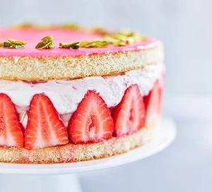

Cupcake Recipe

Description
Make this stunning strawberry and elderflower gateau in just 30 minutes. As well as looking amazing, it tastes as good as anything from a top-end patisserie.
Ingredients
- 2 x 200g sponge flan cases (25cm)
- 6 tbsp strawberry jam or conserve
- 400g Strawberries
- 600ml double cream
- 2 tbsp icing sugar, plus 150g
- 5 tbsp elderflower cordial
- 5-6 raspberries or some pink food colouring gel
- small handful pistachios
- strawberry coulis or cream, to serve
Steps
- Remove the base of a 20cm loose-bottomed cake tin (make sure it’s a deep one) and use it as a template to cut out a circle from each flan case. Chop the offcuts from the flans into small pieces and set aside. Reassemble the tin and line it with a couple of sheets of cling film, leaving enough overhanging to wrap up once the tin is filled.
- Put one flan disc in the base of the tin and spread over half the jam. Arrange the strawberries around the outside with the cut surface facing outwards. If you have any particularly large or small strawberries, put them to one side.
- Whip the cream, 2 tbsp icing sugar and 3 tbsp elderflower cordial together in a bowl until the mixture holds its shape. Chop the reserved strawberries, then fold them into the cream mixture. Use half of the cream to fill the centre of the gateau, spreading right to the edges so it holds the strawberries in place.
- Push a single layer of the chopped flan offcuts into the cream (you may have some leftovers to nibble on), and drizzle over the remaining elderflower cordial. Stir the remaining jam through the rest of the cream, spread it over the flan pieces, and top with the final piece of flan. Fold over the cling film and give the gateau a gentle press down to compact the layers. Chill while you make the icing. Can be chilled for up to 24 hrs.
- Crush the raspberries with the back of a fork and stir in the 150g icing sugar to make a thick icing. Add a splash of water if it’s too thick. Alternatively, add enough water to the icing sugar to make a thick icing, then stir in a few drops of pink food colouring.
- When you’re ready to serve, remove the cake from the tin and discard the cling film, then transfer to a cake stand. Spread the icing right to the edges, then scatter the pistachios in a ring around the top, if using, and serve with a little strawberry coulis or cream on the side, if you like.
Go Back!